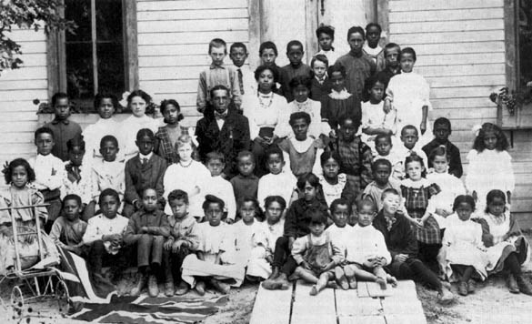
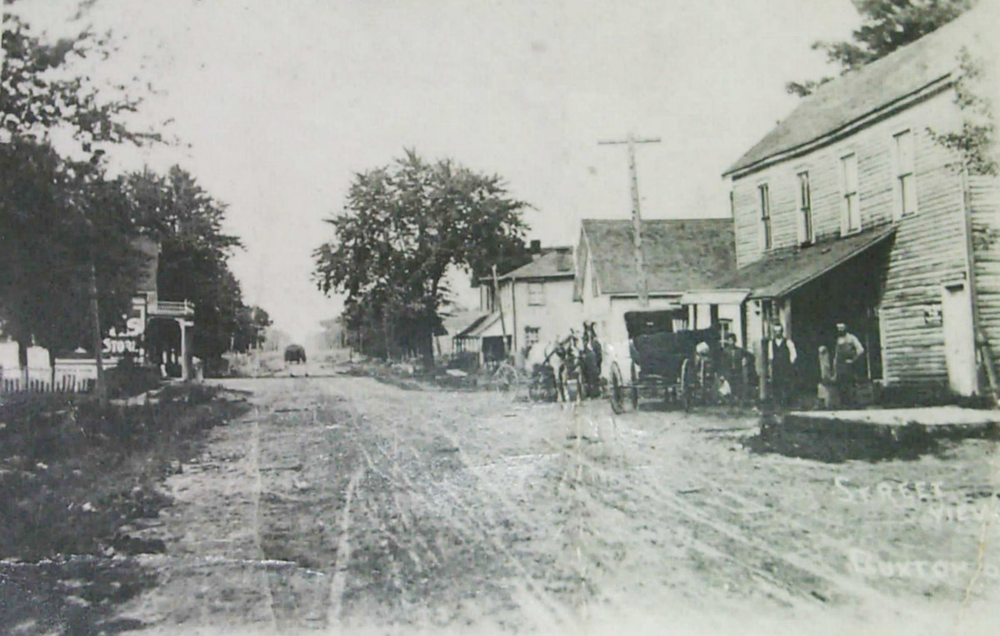

Why Canada?
For freedom seekers on the Underground Railroad, reaching a free northern state was not enough. The Fugitive Slave Act of 1793, and especially its 1850 successor, meant that no Black person in the United States was entirely safe. Slave catchers operated openly in northern cities; free Black people could be seized on the claim that they were escaped slaves; northern courts and officials were required by federal law to cooperate with the machinery of recapture. The only place beyond the reach of American slave law was Canada.
Britain had abolished slavery throughout its empire in 1833. Canada West (present-day Ontario), separated from the United States by the Great Lakes, the Niagara River, and the St. Lawrence, became the primary destination for freedom seekers following the northern routes of the Underground Railroad. Under British law, a person who reached Canadian soil was free. American authorities could not legally compel Canadian officials to return them.
The Elgin Settlement (Buxton)
One of the most successful Black communities established by freedom seekers in Canada was the Elgin Settlement, also known as Buxton, in Ontario. Founded in 1849, the settlement became a model of Black self-sufficiency, education, and community life. Many formerly enslaved people who reached Canada settled there, building farms, homes, schools, and churches.
The settlement emphasized education as a foundation for freedom. Schools in Buxton were integrated and widely respected, and literacy became a key tool for advancement and independence. Families worked collectively to establish stability, demonstrating that freedom was not simply the absence of slavery, but the ability to build a structured and dignified life.

Students and teacher at the Buxton (Elgin) Settlement school, reflecting the importance of education in Black Canadian communities.

A street view of the Buxton settlement, showing the everyday life and infrastructure built by formerly enslaved people in Canada.
In this way, the story of the Underground Railroad does not end at the border. It continues in the communities that freedom seekers built, where the meaning of freedom was defined not only by escape, but by the ability to create new lives.
The journey of the Underground Railroad did not end at the border, but in the communities that freedom seekers built beyond it. From the plantations of the American South, through networks of towns such as Middletown, to settlements like Buxton, this movement was not only about escape, but about the creation of new forms of life. Freedom, in this sense, was not simply reached—it was constructed.
Sources
- Information about the Elgin Settlement (Buxton) adapted from: The Canadian Encyclopedia — Elgin Settlement